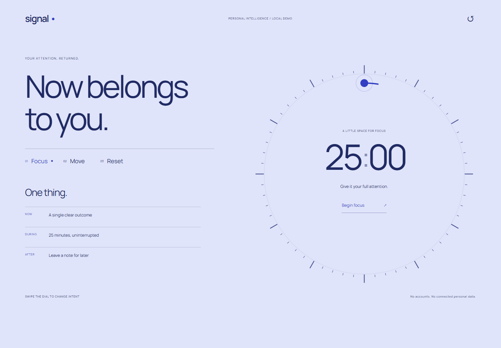
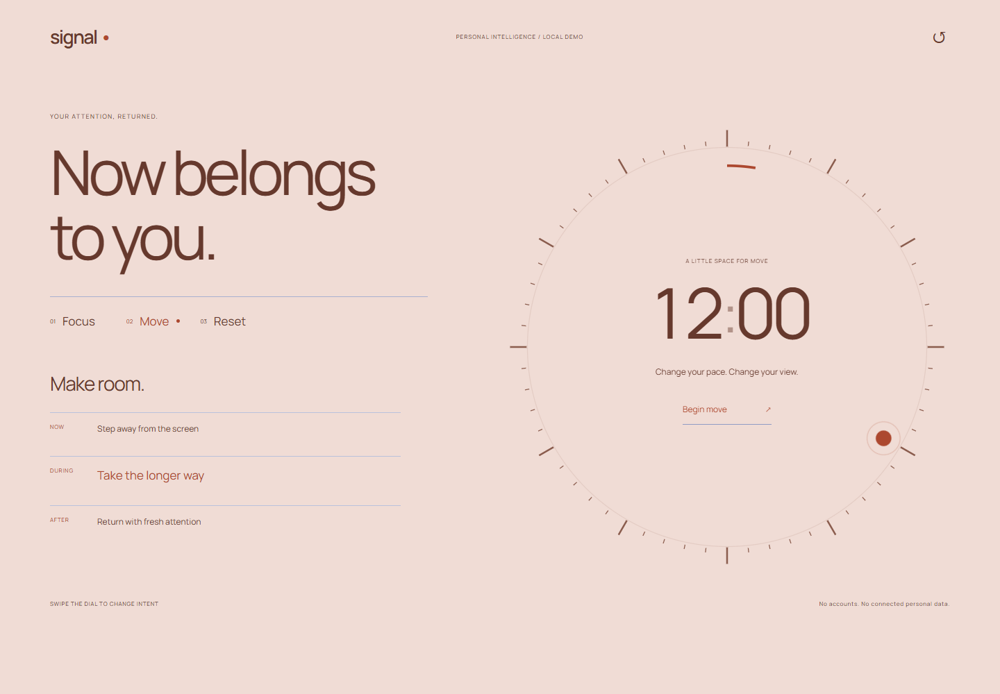
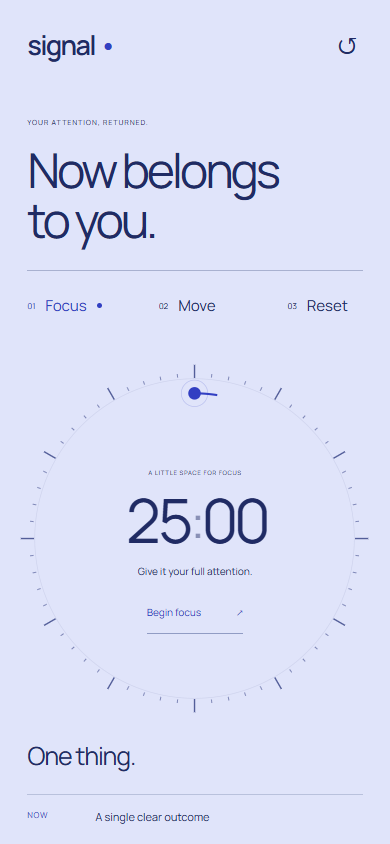
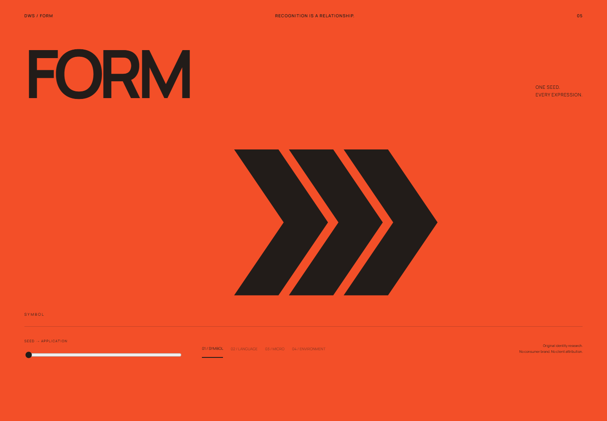
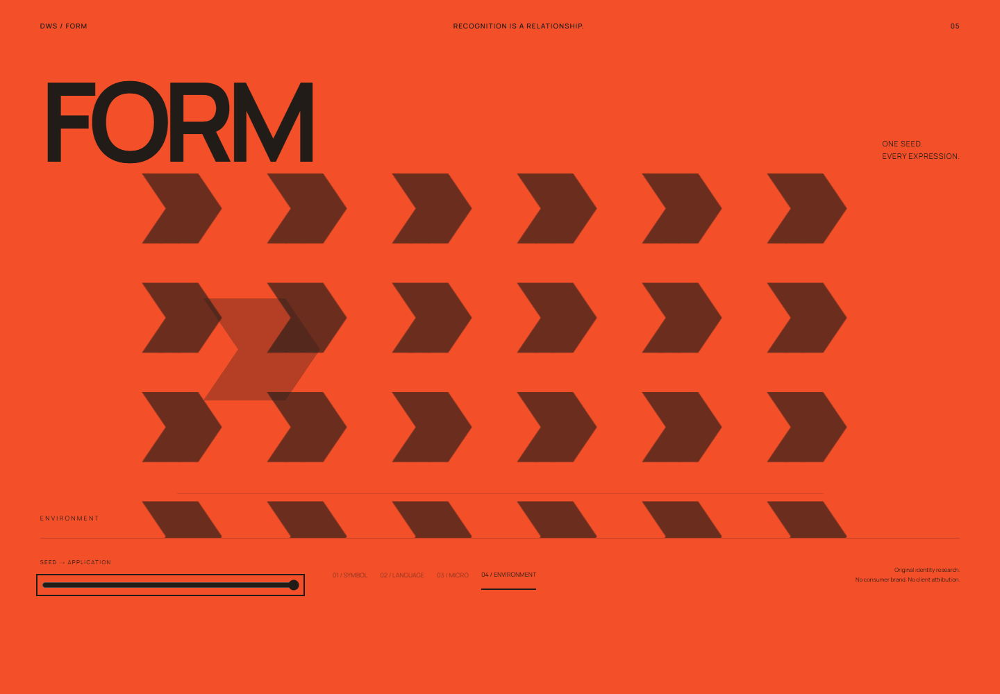
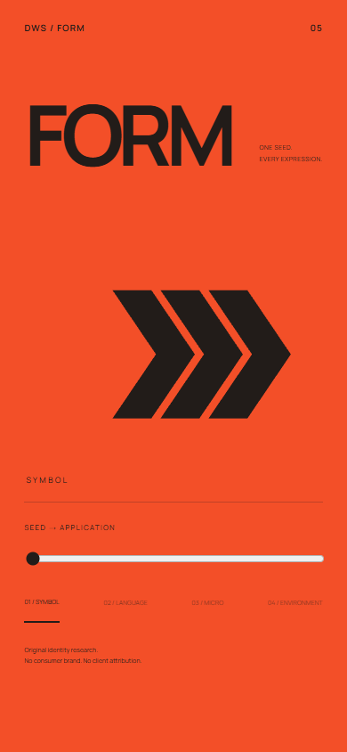
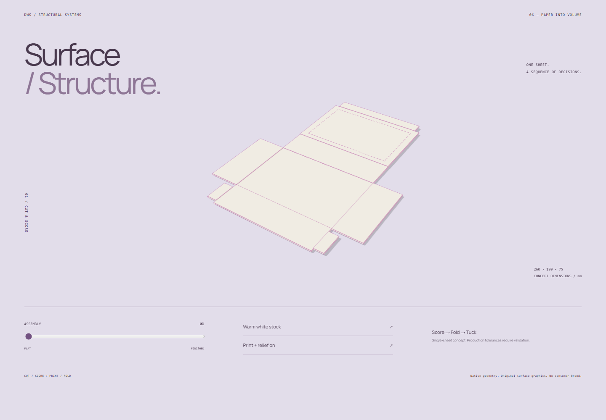
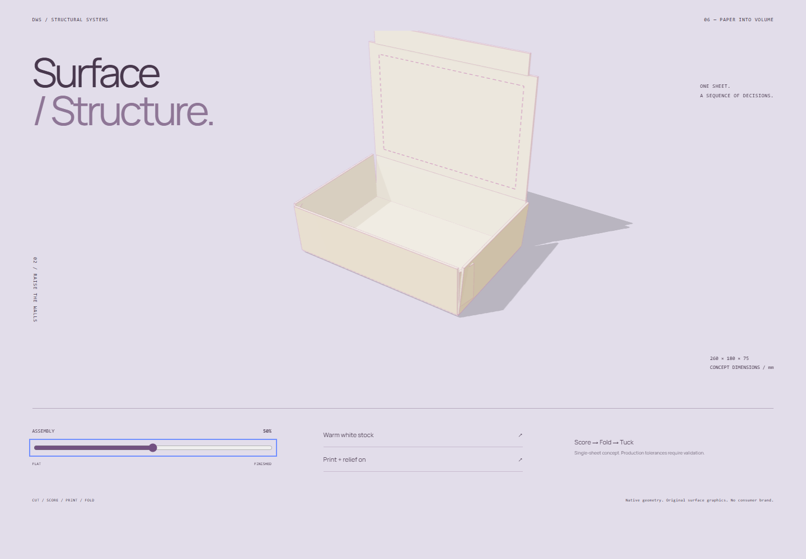
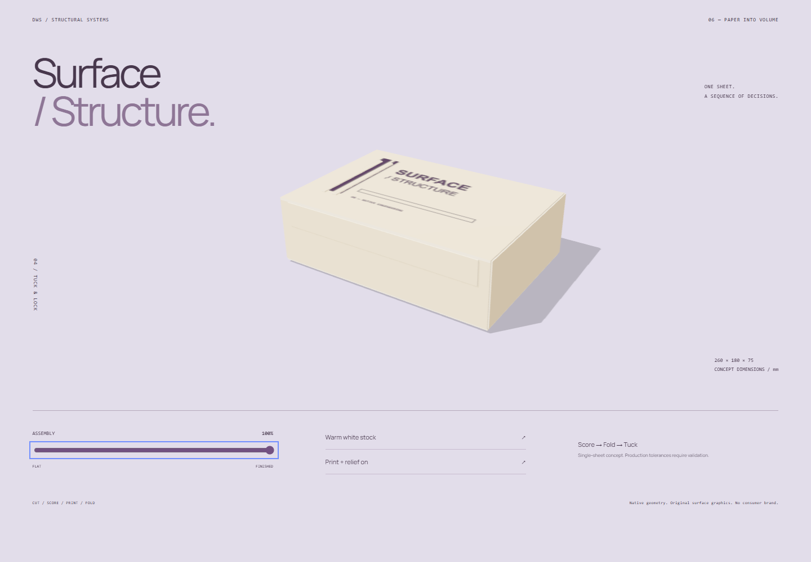
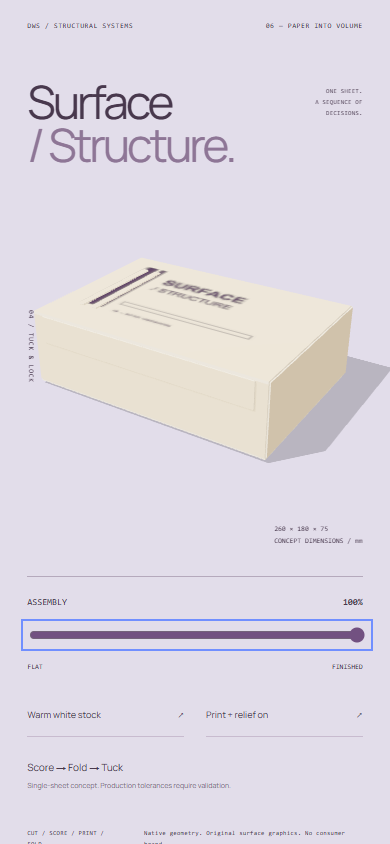

Phase II — 04 / 05 / 06
Signal · Form · Surface / Structure
Open local lab →signal-primary-1440.png
signal-intent-1440.png
signal-primary-390.png
form-primary-1440.png
form-transformation-1440.png
form-primary-390.png
packaging-flat-1440.png
packaging-mid-1440.png
packaging-finished-1440.png
packaging-finished-390.png